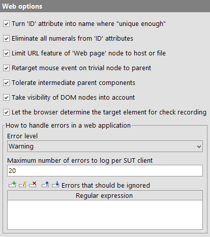
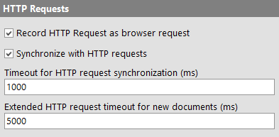
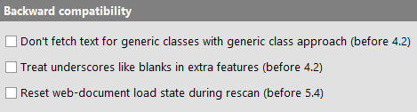

| Version 6.0.3 |
The following options are used specifically for web testing.
|
|  | ||
|
| Figure 37.29: Web options | ||
Use the ID of a DOM node as the component name, provided the ID is sufficiently unique. Uniqueness is determined per node type and depending on the setting of the options Name override mode (replay) and Name override mode (record).
Note Of course this option only changes the way QF-Test treats ID attributes. The attributes themselves are left unchanged or the application would most likely no longer work.
With this option activated QF-Test removes all numerals from 'ID' attributes to prevent problems caused by automatically generated IDs often found in Ajax frameworks like GWT. Such dynamic IDs can change after the slightest modification to a web application which causes tests to break, especially if names are based on IDs. By removing the dynamic part from such IDs they become less useful, because they are no longer unique, but also less harmful. Uniqueness of names is taken care of by QF-Test. Since IDs also serve as a basis for 'Feature' and 'Extra features' attributes, this option is helpful even if IDs are not used as names.
If this option is active, all pages coming from the same host are recorded as the same page by reducing the URL feature to the host part of the URL. This is often useful when pages share a common look and navigation structure.
For file URLs, the URL is reduced to the filename, with intermediate directories removed.
When recording mouse events on DOM nodes in a web page it is often useful to ignore "trivial" nodes and concentrate on the important ones. For example, when clicking on a text hyperlink it is typically not of interest whether part of the link is formatted with a bold font. It is the link that is important.
If this option is active QF-Test does not simply record the event for the deepest DOM node under the mouse cursor. Instead it moves up the hierarchy until it finds an "interesting" node. In the example above, QF-Test would record the event on the <A> node with the option active and on the contained <B> node otherwise.
Normally QF-Test's component recognition is tolerant to changes in the component hierarchy. For web pages with deeply nested tables this can lead to performance problems because the potential variants of determining the target component grow exponentially with the nesting depth. If you experience such problems, try to deactivate this option. It will reduce adaptability but should help with performance.
Note The by far preferable solution is to set unique ID attributes for the different tables and other components so that QF-Test's name override mechanism can apply. This not only speeds up recognition drastically, it is also much more reliable and tolerant to change.
Similar to AWT/Swing or SWT, QF-Test normally only recognizes visible DOM nodes as target components. However, visibility of DOM nodes is not as well defined as that of components in a Java GUI. For example it is possible that an invisible DOM node has visible child nodes. Also, if a web page contains illegal HTML constructs it is possible that a DOM node is considered invisible, even though it is displayed in the browser window. If you come across such a problem you can turn off this option.
When recording checks, components or procedures QF-Test needs to determine the target element under the mouse cursor. In case of overlapping nodes there are two different ways for calculating which one should be used. By default QF-Test lets the browser decide, which is usually the best choice. Since the different browsers don't always behave in the same reliable way, this option can be turned off in case of problems to use the older mechanism based on the z-order of elements instead. This option has no effect on check replay.
Dynamic HTML and AJAX are implemented via a lot of JavaScript code that is executed in the Browser. If an error occurs in such a script, browsers either ignore it or show an error dialog with some details about the error, depending on user setting. Many of these errors are harmless, others can be severe. QF-Test intercepts the error message and logs an error or warning in the run-log instead. This set of options defines the severity of the message and a maximum for the number of such kinds of messages to log.
The possible choices for the option "Error level" are "Error" and "Warning". We advise that you set it to "Error" and make sure that such problems are reported to development and fixed sooner rather than later because they can represent a bug in the application you are testing. Known messages that are not going to be fixed by development can be excluded and ignored via the option Errors that should be ignored.
In case a web page contains erroneous code it is possible that a lot of errors are triggered. Logging all those errors can significantly impact test performance, yet logging more than the first few errors does not really contribute much. The option "Maximum number of errors to log per SUT client" limits the possible number of error messages for this case.
It is possible that some JavaScript errors cannot or will not be fixed, for example when they are coming from third-party code. In such a case it is preferable to ignore the known errors while still having QF-Test report unexpected ones. When the browsers reports a JavaScript error, QF-Test searches its error message for the occurrence of any of the regular expressions specified in this option. In case of a match, the error is ignored. If no exceptions are defined or none match, the error is reported in accordance with the previous options.
These options influence the behavior of HTTP requests.
|
|  | ||
|
| Figure 37.30: Options for HTTP Requests | ||
When recording HTTP Requests a 'Browser HTTP request' is created. This request will be submitted directly via the browser so that the response is shown afterwards and test execution can be continued directly in the browser. By deactivating this option a 'Server HTTP request' will be recorded. This request will be submitted by QF-Test and doesn't have any effect on the browser. The response is only accessible in QF-Test.
Note HTTP request tracking is supported for browsers in QF-Driver or CDP-Driver mode only. It does not apply to WebDriver based tests or to browsers embedded in Java like WebView.
Because most things in AJAX based web applications run asynchronously, one of the main challenges in testing such applications is timing. QF-Test uses various means to synchronize with the SUT and this option controls one of them. If turned on, QF-Test will keep track of all HTTP requests the browser sends to the server. Before and after replaying an event, QF-Test will wait until no requests are outstanding. The following two options Timeout for HTTP request synchronization (ms) and Extended HTTP request timeout for new documents (ms) are used for fine-tuning this feature.
When synchronizing with the SUT by tracking HTTP requests as explained for the option Synchronize with HTTP requests, QF-Test cannot wait indefinitely for outstanding requests as this would impact test performance too much. This option defines the maximum time to wait for outstanding requests in normal situations and the following option Extended HTTP request timeout for new documents (ms) is used right after a page has finished loading.
When synchronizing with the SUT by tracking HTTP requests as explained for the option Synchronize with HTTP requests, QF-Test cannot wait indefinitely for outstanding requests as this would impact test performance too much. Right after a page has finished loading, AJAX applications tend to send a lot of requests and may take a while to build the final user interface via JavaScript. This options defines the maximum time to wait for outstanding requests at that point. The previous option Timeout for HTTP request synchronization (ms) is used to set the standard timeout for other situations.
These options can re-set QF-Test to older behavior. Those settings have changed that much that QF-Test cannot keep backward compatibility over all versions.
|
|  | ||
|
| Figure 37.31: Options for web backward compatibility | ||
In versions older than 4.2.0 'Check text' and 'Fetch text' nodes provided too much or too less text for components of generic classes in some cases. Especially SELECT or TableCell components containing text-fields returned wrong text. Now the any child component with a generic class will be taken into account.
Older QF-Test versions than 4.2.0 turned all underscores into blanks once 'Extra features' were compared. This behavior could cause troubles in case you were really searching for underscores.
Before version 5.4 QF-Test had a bug that caused an inadvertent reset of the internal loading state of a document. In the same context, documents contained in frames were not handled correctly. Both could lead to a 'Wait for document to load' succeeding solely because a document existed without regard for whether it was loaded anew or not.
Since QF-Test version 5.4 document reload is checked more precisely again. This might lead to new errors in case existing tests contain too many or misplaced 'Wait for document to load' nodes. In this case, it is possible to restore the previous behavior by activating this option, instead of correcting the errornous test-suites.
| Last update: 9/6/2022 Copyright © 1999-2022 Quality First Software GmbH |